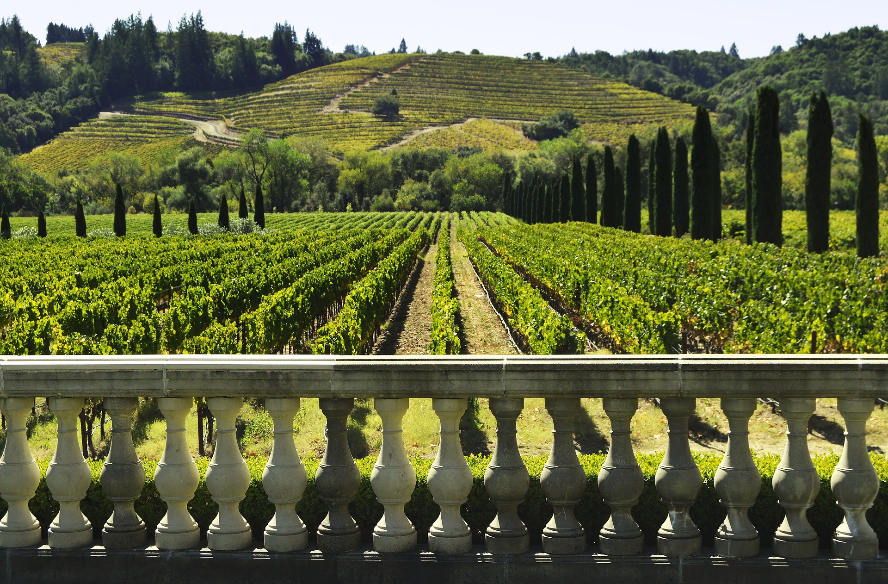
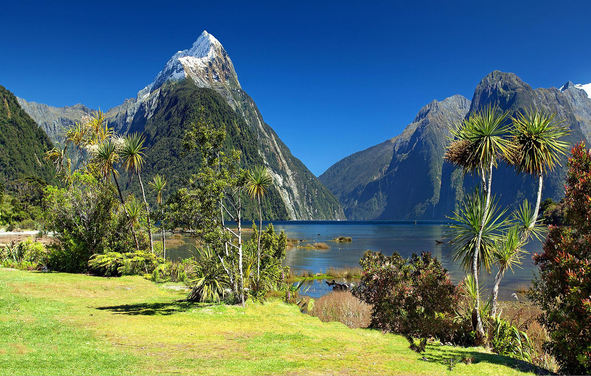

Central Otago Orchard and Winery Tour - 4 hours, $70
Come and sample the best of locally grown cuisine in the delightful Central Otago region.
You’ll learn the secrets to growing the perfect apricots and grapes, and the art of turning
them into delicious jam and wine.
This tour includes a three course meal, along with a tasting of a region of local wines. There
will be an opportunity to purchase the wines afterwards.

Deep Fiordland Tour - 5 Days, $600
If you’ve always dreamed of seeing a side of Aotearoa’s biggest national park that few people ever do,
then this is your chance! Starting in Te Anau, you’ll take a bus ride then a boat trip to a secret location
where our hike will begin. Across five days you’ll be shown the true nature of Fiordland. The old historic sites. The rarest of
nature. A rock that looks like an eagle.
This tour contains things that you won’t get anywhere else.
A high level of fitness is required. We will supply three meals a day and sleeping gear, you’ll need to
supply additional snacks and other relevant hiking gear.